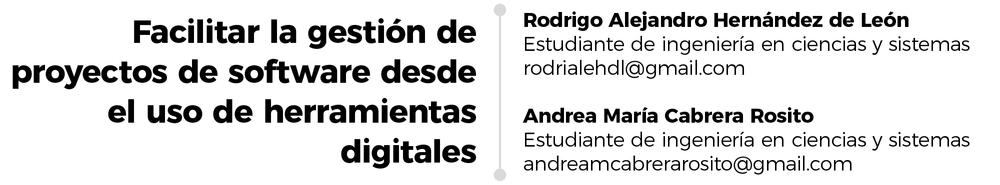

11 Facilitar la gestión de proyectos de software desde el uso de herramientas digitales

Palabras clave: Proyectos, Gestión, Software, Recursos, Productividad, Adaptación.
11.1 Introducción
La evolución de la gestión de proyectos de software ha recorrido un largo viaje que ha sido capaz de reflejar como ha progresado la tecnología y cómo cubre las necesidades cambiantes del ser humano. Destaca la crisis del software como ese disparador para la creación e implementación de herramientas especializadas para ofrecer soluciones adaptadas – sirviendo como facilitadores para una gestión efectiva en el desarrollo del software.
Hoy en día con los cambios constantes en los avances de la tecnología digital, la gestión de proyectos de software no se queda atrás ya que muchos de los procesos que eran manuales pasaron a ser automatizados, optimizados y gestionan de mejor manera contando con distintas opciones, siempre y cuando se adapten a las necesidades del negocio, equipo de trabajo y proyecto que se esté realizando.
11.2 Artículo
La evolución de la gestión de proyectos de software – desde sus inicios hasta hoy
La humanidad, desde tiempos inmemorables, ha realizado diferentes tipos de proyectos. No se le atribuye la gestión de proyectos a nadie, pero cabe destacar que, en los diferentes entornos como la industria, la ciencia o el arte, se ha utilizado esta gestión, por lo que las técnicas desarrolladas han ido evolucionado junto con estas. En el ámbito del software, se dan sus primeros pasos desde finales de los años 60s e inicio de los 70s con el auge de las computadoras y la metodología Ad Hoc – improvisada además de que no seguía un plan específico. Dado como resultado la primera crisis del software.
Con la complejidad creciente de los sistemas informáticos, se evidenció la necesidad de la implementación de una formalidad – naciendo así la gestión de proyectos de software: herramientas y prácticas para manejar con enfoques más efectivos además de eficientes, las nuevas exigencias que el software produce.
Herramientas destacadas para impulsar y respaldar la gestión de proyectos de software en la actualidad
Figura 11.1: Herramientas de gestión de proyectos de software.
Destacan actualmente aquellas herramientas que facilitan la administración de los procesos de software. Dependerá del objetivo final de cada empresa o individuo su elección de herramienta, pero actualmente, se pueden mencionar herramientas como principales competidores Jira, Asana o Trello. Siendo el primero, una solución para el desarrollo de software y trabajo en equipo. El segundo, ofreciendo ser una solución completa integrando el desarrollo de software y gestión de trabajo, útil para aquellas empresas dinámicas. El último, siendo útil para la gestión de proyectos pequeños.
Hoy en día es muy significativo usar herramientas de gestión de proyectos, pero se tienen que tomar en cuenta ciertos factores como las necesidades o los desafíos del proyecto evaluando cuál software es cubre esa necesidad, también puede enlistar las distintas aplicaciones que pueden dar un impacto al proyecto. Si ya se cuenta con una lista de posibles aplicaciones, es necesario probarlas con el equipo de trabajo para recibir una retroalimentación de este para utilizar la retroalimentación para poder adaptar el software al proyecto. Finalmente, es importante realizar un análisis de costos para justificar la elección siempre considerando los recursos disponibles.
Al contar con herramientas de software que se adapten a tu negocio, así como a tu proyecto, llega a tener un impacto significativo como el aumento de la productividad, la optimización de recursos, la mejora de tanto la comunicación como la colaboración, una mejor gestión de riesgos, mayor la transparencia y responsabilidad. Por último, también facilita la generación de reportes en tomar decisiones. Muchos de estos cambios se deben a que los procesos manuales que eran a papel y lápiz se pasaron a tecnologías para una mejor gestión de proyectos.
11.3 Conclusiones
La evolución de la gestión de proyectos de software es una gran evidencia del progreso que ha tenido la tecnología al ser utilizada para utilizarse como herramienta que se adapta y satisface a las necesidades cambiantes de la humanidad. Desde acontecimientos como la crisis del software, hasta la automatización de procesos manuales, la gestión de proyectos ha evolucionado considerablemente. Hoy en día, herramientas como Jira, Asana o Trello, por mencionar algunas, han transformado la manera en la que personas y empresas gestionan el software, que puede notarse en la mayor eficiencia y optimización de recursos que permiten una mejor colaboración y toma de decisiones. Es esencial que empresas e individuos seleccionen aquellas herramientas que mejor se adaptan a su proyecto – parte clave para el éxito en la gestión en el desarrollo de software.
11.4 Referencias
[1] Casallas, Rubby.“¿Aún en Crisis? Algunos Mitos y desafíos de la Ingeniería de Software”. En Revista Sistemas No. 102 – ACIS. Octubre - Diciembre 2007. Acceso el 26 de julio del 2024. https://acis.org.co
[2] Cawley, Conor. “6 Ways Technology Has Changed Project Management”. Tech.co. 10 de Mayo de 2023. Acceso el 3 de mayo de 2024. https://tech.co
[3] Raeburn, Alicia. “Los 12 mejores software de gestión de proyectos en 2024”. Asana. 16 de febrero de 2024. Acceso el 26 de julio del 2024. https://asana.com
[4] Virtual Space. “7 Important Criteria for Project Management Tools”. 18 de Noviembre de 2022. Acceso el 3 de agosto de 2024. https://virtualspace.ai
[5] Virtual Space. “The Importance of Project Management Tools for Your Business”. 13 de Junio de 2023. Acceso el 3 de agosto de 2024. https://virtualspace.ai
[6] Wallace, William. (2014). “Gestión de Proyectos”. Edinburgh Business School (EBS) – Heriot-Watt University. Acceso el 26 de julio del 2024. https://ebs.online.hw.ac.uk